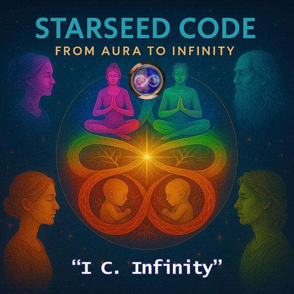
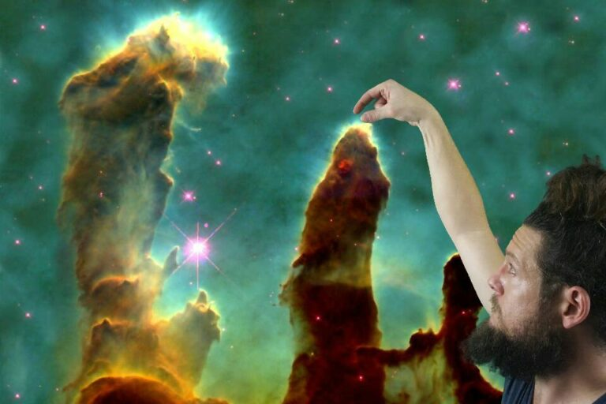
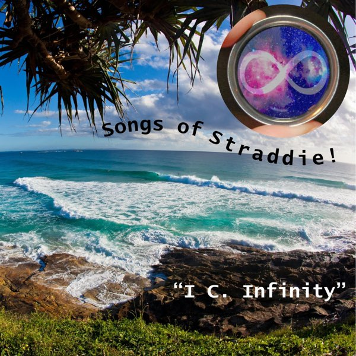
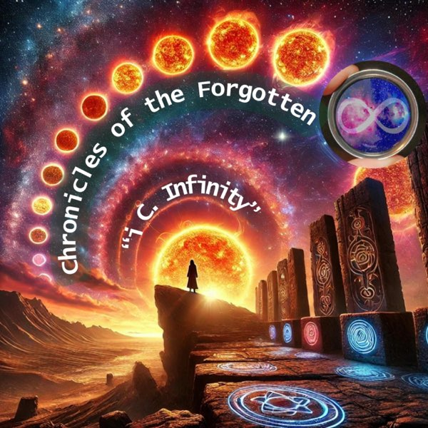
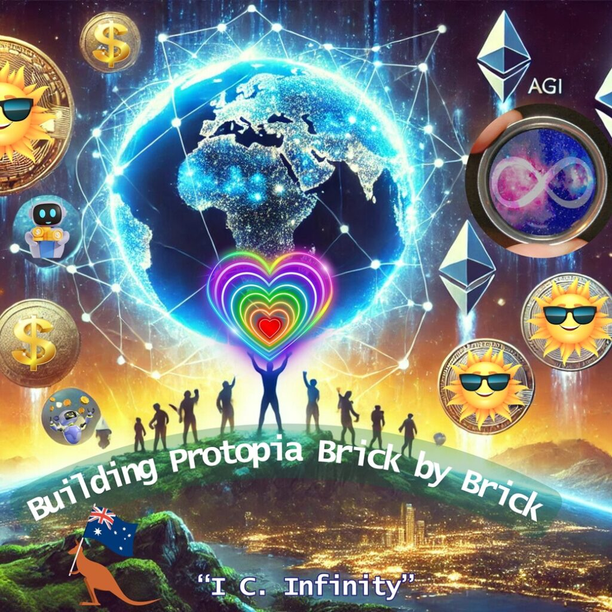

From Aura to Infinity
The metaphysical technology layer: identity, love, intelligence, governance, and the self as a living interface.

A living music catalogue for the songs, albums, lyrics, deeper meanings, and Infinity Engine video seeds behind the I See Infinity universe.

The metaphysical technology layer: identity, love, intelligence, governance, and the self as a living interface.

The local doorway: Minjerribah, summer, shoreline, community, romance, and the place where the cosmic work touches sand.
Each album page keeps the track list, the bigger system layer, and the visual world for future lyric videos, comics, and vertical micro-dramas.
The island doorway: Minjerribah, summer, tides, romance, community, and the first public invitation to meet the project where it lives.

A larger mythic and social arc: ignored voices, broken systems, ancestral echoes, technology, hope, deception, and repair.
The metaphysical tech chapter: Aura, G.A.J.R.A., infinity, democratic redesign, love, memory, myth, and the self as a living interface.

The fourth-album build: crisis as mirror, protopia as practice, care ledgers, consent, repair, forms, civic courage, and grounded abundance.
Standalone public releases that point into the larger album worlds.
The early sketches, experiments, first frameworks, and raw attempts before the albums took a clearer shape.
A holding page for the next cycle of songs after A Protopian Gambit.
The joyful local songs that do not need a heavy throughline to be worth keeping.
This site also helps work out the paid download products before the checkout layer is final: what files go in each bundle, what formats to offer, and what bonus material belongs where.
Decide which audio, videos, lyrics, covers, notes, and bonus files belong in each pack.
Compare MP3, WAV, FLAC, MP4, lyric PDFs, and future physical or USB options.
Use the current Strange But True downloads page as the checkout reference, not the final product structure.
The site is built to become an intake layer for the Infinity Engine: lyrics in, meaning maps out, comic panels first, video keyframes next.
Full Protopian lyrics are imported now. Other albums have clean slots ready for the next content pass.
Every song page starts with a plain-language meaning layer so listeners can see how the song fits the bigger system.
Each song has three first-pass seed directions: lyric video, micro-drama, and comic-as-storyboard.